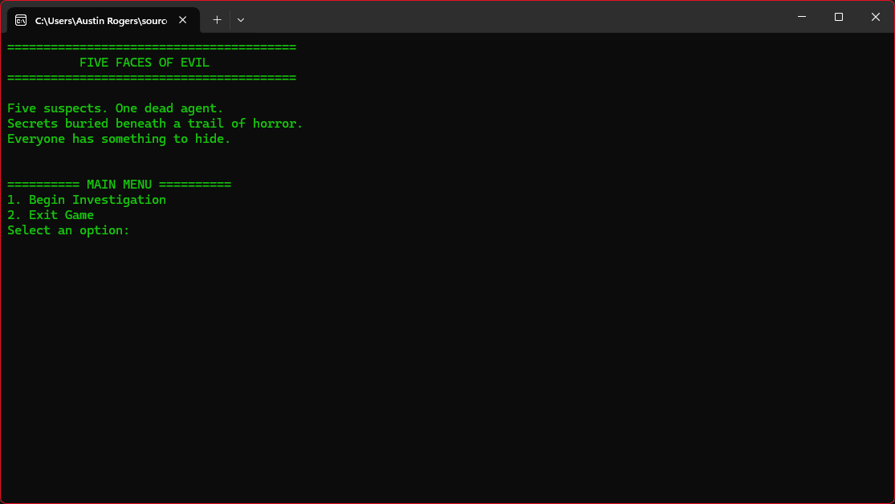

Languages
C++, HTML, CSS
Computer Science Student & Aspiring Developer
I'm a Computer Science student focused on software development, problem-solving, and building practical applications. I enjoy taking an idea from the planning stage through development, testing, and refinement. My goal is to continue growing as a developer while creating software that is functional, engaging, and thoughtfully designed.
About Me
My interest in Computer Science comes from enjoying the process of understanding how things work and finding solutions to challenging problems. Through my coursework, I've developed experience with C++ programming, object-oriented design, debugging, and building applications from the ground up.
One of the most valuable parts of my learning experience has been developing Five Faces of Evil, a text-based murder mystery game. Starting with an idea and turning it into a functional application has allowed me to practice planning, problem-solving, and organizing code into manageable components.
I've also learned that software development involves much more than writing code. Testing, troubleshooting, documenting progress, and being willing to revisit earlier decisions are all important parts of creating something reliable.
I'm continuing to strengthen my technical skills and expand my understanding of software development. I enjoy learning through hands-on projects and challenging myself to build something better with each new experience.
C++, HTML, CSS
Visual Studio, Git, GitHub
Object-oriented programming, debugging, testing, and clean code
Featured Work
These projects represent my development experience and the skills I've been building throughout my Computer Science coursework.

C++ Console Application
Five Faces of Evil is a text-based murder mystery game where players investigate five suspects, examine evidence, and uncover the truth behind an agent's murder.
Developing this project helped me better understand how to organize a larger application using object-oriented programming. I gained practical experience creating classes, managing program flow, debugging issues, and testing individual features.
One of my biggest takeaways was learning how important it is to build and test each component carefully. Working through challenges and improving the code along the way helped me become more confident in my problem-solving abilities.
Professional Experience
My resume highlights my professional experience, technical skills, education, and continued growth as a Computer Science student.
Contact
I'm always interested in connecting with others in the technology and software development community. Feel free to explore my projects and follow my continued growth as a developer.